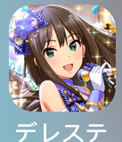
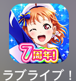
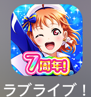
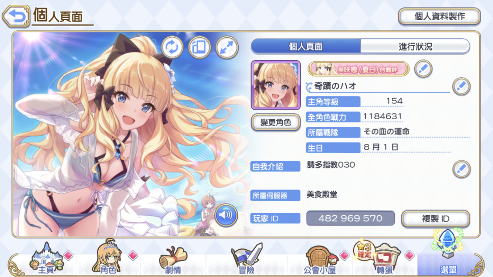

Meng Hao の 興趣
聽歌
類型:主要都是日文歌，也很喜歡聽一些純音樂(OST)的歌曲，下面是我喜歡的歌手:
- LISA
- ELISA
- Kalafina
- 梶浦由記
P.S. 我也會在聽日文歌的同時，順便練習我的日文能力，歡迎到察看我的youtube音樂撥放清單
看動畫
從小受大哥影響，一直都很喜歡看動畫
現在很少時間能追新番，所以新番偶爾只會挑一、兩部來看，當作消遣
也會藉由看動畫來增進我的日文能力
P.S. 有些比較老舊的動畫，故事內容反而很值得探究和思考
推薦作品: 銀河英雄傳說玩電玩
最近主要是玩手遊，偶爾也會玩PC game
手遊部分主要是玩音遊和公主連結，有興趣的話，可點選下列圖片連結前往察看
 

想加我公主連結好友的話，可以參考我下方給的圖
P.S. 我是在美食殿堂服，不要搞錯了喔!
